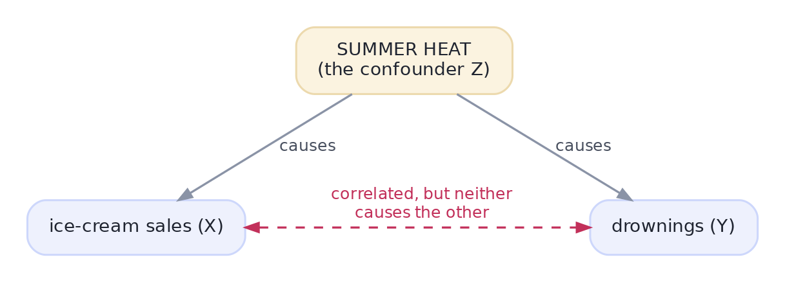

Why Experiment? Causation You Can Trust
Randomization is the closest thing to a truth machine we have.
Almost every big product decision comes down to one question: "if we ship this change, will the metric actually go up — because of the change?" Correlation can't answer that, because the users who happen to see a feature are rarely comparable to those who don't. The randomized experiment — the A/B test — is the closest thing we have to a truth machine: it is how Netflix, Amazon, and every serious tech company decide what to build. This track makes you fluent in running and reading them, and it's one of the most-tested skills in product data-science interviews.
ConceptCorrelation can't tell you 'because'
You already met this in the statistics track: correlation is not causation. The reason is confounding — a lurking third variable that drives both things you're comparing. Ice cream sales and drownings rise together, but neither causes the other; summer heat drives both:

This is the trap with observational data. Say you compare users who used a new feature against those who didn't, and the feature-users have higher retention. Did the feature cause it? Probably not — the kind of person who tries new features was already more engaged. That selection bias is a confounder, and it wrecks naive comparisons.
Concept · the whole ideaRandomization: the truth machine
Here's the magic. If you randomly assign each user to see version A (control) or version B (treatment), then — on average — the two groups are identical in every way, measured or not: same engagement mix, same age, same everything, because the coin flip doesn't care. So the only systematic difference between the groups is the change you made. Any gap in the metric can now be attributed to that change. Randomization doesn't remove confounders one by one — it balances all of them at once, including the ones you never thought to measure. That is why the randomized experiment is the gold standard for causality. Watch it work:
import numpy as np
rng = np.random.default_rng(0)
n = 5000
# every user has hidden "engagement" that affects BOTH their behaviour and the outcome (a confounder)
engagement = rng.normal(0, 1, n)
true_effect = 0.10 # the change really adds only +0.10
# OBSERVATIONAL: engaged users self-select into using the new feature
chose = (engagement + rng.normal(0, 0.5, n) > 0.5).astype(int)
outcome_obs = 2*engagement + true_effect*chose + rng.normal(0, 1, n)
naive = outcome_obs[chose == 1].mean() - outcome_obs[chose == 0].mean()
# RANDOMIZED: assign by coin flip, independent of engagement
assigned = rng.integers(0, 2, n)
outcome_rct = 2*engagement + true_effect*assigned + rng.normal(0, 1, n)
experiment = outcome_rct[assigned == 1].mean() - outcome_rct[assigned == 0].mean()
print(f"true effect of the change : +{true_effect:.2f}")
print(f"naive observational comparison : {naive:+.2f} <- confounding makes it look huge")
print(f"randomized A/B estimate : {experiment:+.2f} <- recovers the truth")true effect of the change : +0.10 naive observational comparison : +3.00 <- confounding makes it look huge randomized A/B estimate : +0.09 <- recovers the truth
The naive comparison is wildly wrong — it credits the feature with a huge effect that's really just engaged users being engaged. The randomized estimate lands right on the true +0.10. Same data-generating world, opposite conclusions — and the only difference is whether assignment was random. This is the entire reason A/B tests exist.
Concept · the honest caveatWhen you can't randomize
Experiments aren't always possible or ethical: you can't randomly assign people to smoke, you can't A/B test a one-time pricing change on the same users, and some changes are too big or slow to test. When randomization is off the table, you fall back to causal inference methods (Track 7) that try to approximate an experiment from observational data — harder, more assumption-laden, and never quite as trustworthy. So the rule of thumb: if you can run an experiment, run it; reach for the observational methods only when you truly can't.
Interactive labYour turn — measure the causal effect
The randomized experiment's data is loaded: assigned (0 = control, 1 = treatment) and outcome_rct (each user's outcome). Compute the average treatment effect — the mean outcome of the treatment group minus the mean of the control group — and assign it to answer, rounded to 2 decimals.
assigned (0/1) and outcome_rct arrays loaded. First Run loads NumPy.outcome_rct[assigned == 1].mean() minus outcome_rct[assigned == 0].mean(), then round(float(...), 2).answer = round(float(outcome_rct[assigned == 1].mean() - outcome_rct[assigned == 0].mean()), 2)Because assignment was random, the two groups are comparable, so the simple difference in means is an unbiased estimate of the causal effect (≈ the true 0.10).
★ Key points to remember
- Correlation is not causation; the culprit is confounding — a hidden variable driving both things you compare (engaged users self-selecting into a feature).
- A randomized experiment (A/B test) assigns users to control/treatment by chance, so the groups are balanced on everything — measured and unmeasured.
- The only systematic difference left is the change itself, so a metric gap can be attributed to it — that's causality.
- Randomization is the gold standard: if you can run an experiment, run it.
- When you can't randomize (ethics, feasibility), fall back to causal inference (Track 7) — weaker and more assumption-heavy.
◆ Practice▸
Show solution & reasoning
People who open marketing emails are already more interested/engaged buyers — a textbook confounder — so the 3× mixes the email's effect with who-opens-it selection bias. To measure the true effect, run a randomized holdout: randomly withhold the email from a control group and compare purchase rates between the randomly-assigned "sent" and "not sent" groups (not openers vs non-openers). That difference is the campaign's causal lift.
Show solution & reasoning
Because assignment is by pure chance — independent of every user attribute — each group ends up (on average) with the same mix of all characteristics, known and unknown, so no variable can systematically differ between control and treatment to bias the comparison.
◎ Deep dive: the counterfactual, why balance beats adjustment, and validity▸
The counterfactual: what causality actually means. The causal effect for a single user is the difference between their outcome with the treatment and their outcome without it — but you only ever see one of those (the fundamental problem of causal inference). You can't un-ring the bell for the same person. Randomization solves it at the group level: the randomly-assigned control group is a fair stand-in for "what the treatment group would have done without the treatment", so the difference in group averages estimates the average causal effect.
Why balance beats adjustment. With observational data you can try to adjust for confounders — control for engagement, age, and so on — but you can only adjust for what you measured and thought of. Randomization balances the confounders you forgot, the ones you can't measure, and the ones nobody knows exist. That robustness to unknown confounders is the unique superpower of experiments, and why "just add more control variables" is never as safe as a coin flip.
Internal vs external validity. An experiment has strong internal validity (within it, the effect is real and causal) but its external validity — whether the result generalises to other users, times, or contexts — is a separate question. A feature that wins for new users in December may not win for everyone year-round. Great experimenters distinguish "is this effect real here?" from "will it hold there?", and treat the second as its own investigation.
The core answer product-DS interviews want: correlation ≠ causation because of confounding; a randomized experiment balances all confounders (measured and unmeasured) so a metric gap is causal; prefer an experiment whenever you can run one, and fall back to causal-inference methods only when you can't. Name selection bias (openers vs non-openers) as the classic trap.